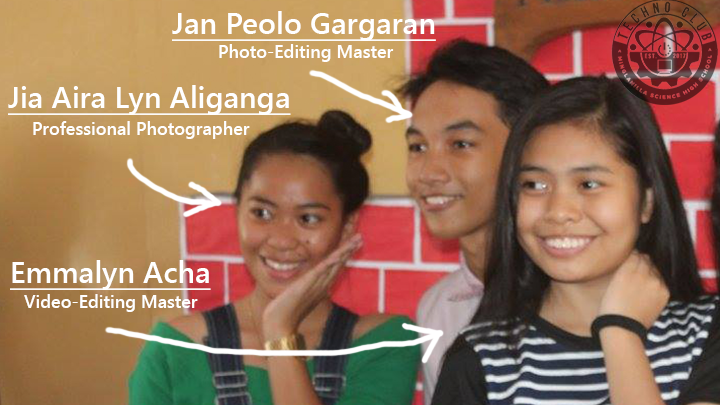
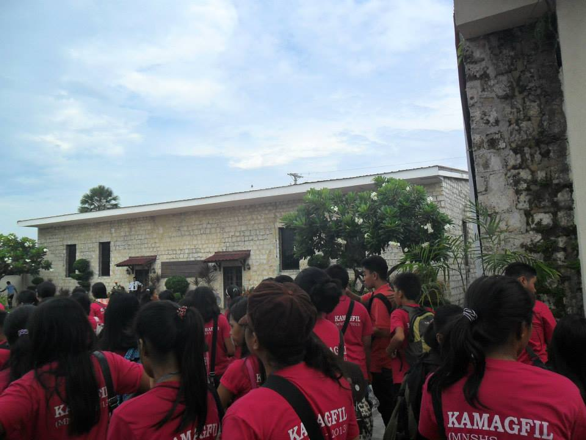
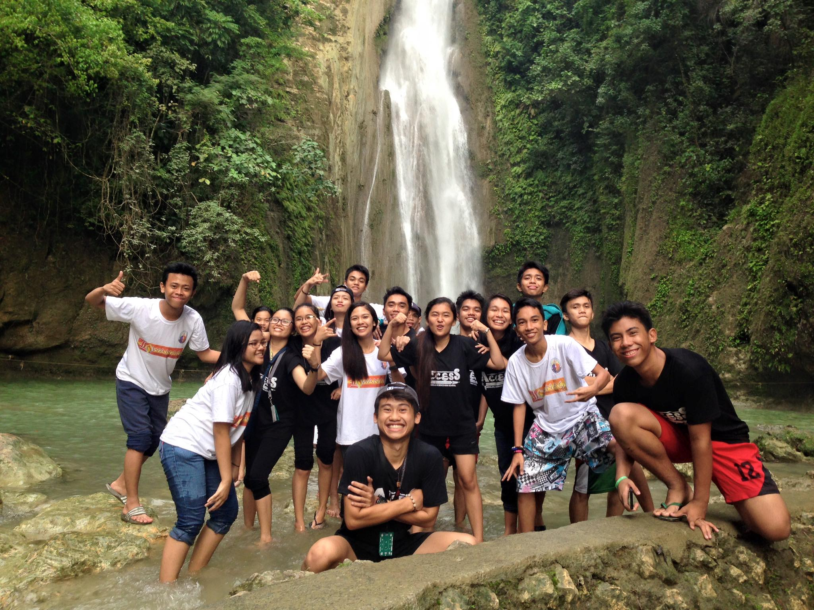
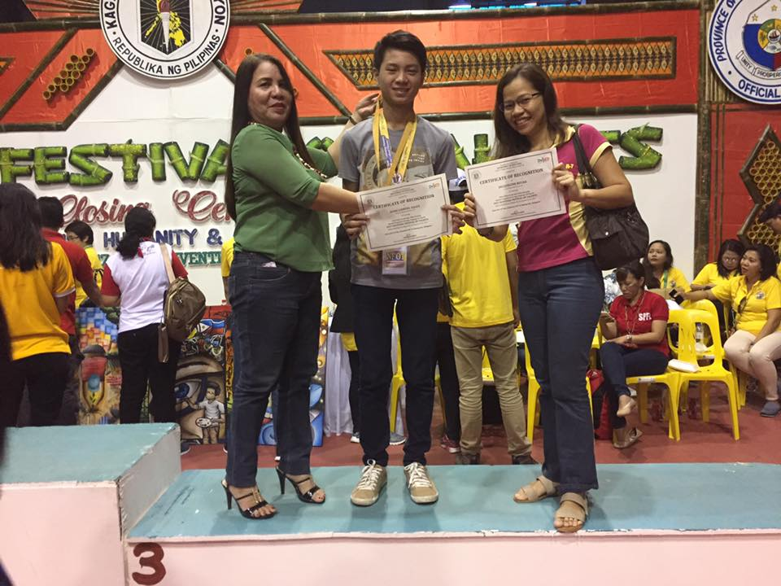
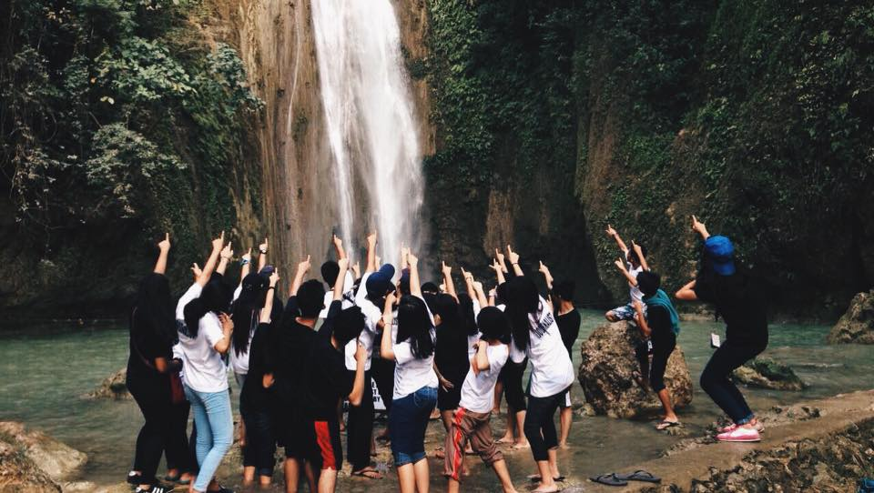

- Supreme Student Government
- Science and Innovation
- SIGMA
- Techno Club
- KAMAGFIL
- English
- La Francophonie
- School Publication
Organizations
Language
Performing Arts
Achievements
Supreme Student Government 2017-2018
The Supreme Student Government (SSG) is the foremost co-curricular student organization authorized to operate and implement pertinent programs, projects and activities in schools nationwide. It lays the groundwork for good governance, volunteerism, unity and cooperation by providing the students various venues where they can improve their leadership knowledge, skills and attitudes. It trains students to become better members of society in accordance with the ideals and principles of participatory democracy and good citizenship. More importantly, it helps the Department cf Education (DepEd) achieve its thrusts as indicated in the Education for All (EFA) Goals, Millennium Development Goals (MDGs) and the Basic Education Social Reform Agenda (BESRA).
| President: | Apple Joy Abellana |
| Vice-President: | Fritz Gerald Camello |
| Secretary: | Rick Ryan Zafra |
| Treasurer: | Angelica Delos Reyes |
| Auditor: | Mary Grace San Nicholas |
| Public Information Officer: | Joshua Jeric Figueroa Sheravi Galang |
| Peace Officer: | Jude Louise Alolor Ezra Lobitana |
| Grade Level Representatives: | Matt Janssen Alvarez Julmar Parages Trisha Faye Pasay Aubrey Rose Undang Charmaine Gonzalez |
| Adviser: | Mrs. Aileen Manubag |
Science and Innovation
Yes-O
The Youth for Environment in Schools Organization (YES-O) is a science organization dedicated to the protection, preservation and conservation of our natural resources. This conviction believes that inducing environmentalism in the youths can help secure a clean and healthy environment for the future. A co-curricular organization that organizes and executes programs for the enhancement of the environment. Spreading awareness in others of the state of our ecology. Members realize the deterioration of the natural environment-this is what motivates each to act. The organization operates on the values of youth empowerment, sustainability, diversity, justice and healthy environment.
Unless someone like you cares a whole awful lot,
Nothing is going to get better. It's not.
-Dr. Seuss, The Lorax
Investigatory Projects
Investigatory Project is a component in the Research and Science subject where students find a research study that aims to solve the environmental and economic problems within the community. Research Studies are requirement in both Grade 9 and Grade 10 where during the Grade 9 years, the expected output is a research plan that contains all the methods to be done during the actual conduction of the study. The conduction of the research study is to be done during the Grade 10 years where the study is actually done and standard testing methods and data analyses are employed. Those who have an interesting study that is well evaluated by the school’s Scientific Review Committee (SRC) will have the chance to compete in the Division level with other studies and if the study has enough potential, it can reach the Regional, National, or even in the Intel International Scientific and Engineering Fair.
SIGMA
Sigma stands for STUDENTS INSPIRING GREATER MATHEMATICAL ACHIEVEMENTS. The Students Inspiring Greater Mathematical Achievements (SIGMA) is the official Mathematics Organization of the Minglanilla Science High School. Students who are well-versed in the concepts of Mathematics are welcomed in this group. The Students Inspiring Greater Mathematical Achievements (SIGMA) is the official Mathematics Organization of the Minglanilla Science High School. Students who are well-versed in the concepts of mathematics are welcomed in this group. The organization helps to foster a love for mathematics and problem solving. At meetings, students are given problems from past competitions to solve and discuss. Excellent students are given the chance to compete in the Area and Division Level of Math Expo.
Techno Club

The Techno Club is where like-minded students with the aptitude for the Information and Communications Technology (ICT) are flocked together. The members of this club are further divided into the Artistic and Technical aspect. The Artistic aspect is composed of those who specialize in image and video editing, graphics design, and more skills that require creativity. Meanwhile, the Technical aspect is made up of members whose specialty is on the practical and logical side of ICT such as computer programming, web design, and computer systems servicing. Most of the Audio Visual Presentations and Graphic Design are courtesy of the members of the club.
KAMAGFIL
Ang Kapisanan ng mga Mag-aaral sa Filipino (KAMAGFIL) ay isang organisasyong pampaaralan na naglalayon na isulong ang paggamit ng pambansang wika na Filipino sa pamamagitan ng mga programa at mga patimpalak na kadalasan ay nagaganap tuwing Buwan ng Wika. Hindi lamang tuwing Buwan ng Wika gumagana ang organisasyong ito kundi buong taon isinusulong ng KAMAGFIL ang paggamit ng Filipino. Ang mga programa gaya ng Lakbay Aral, iba’t ibang patimpalak sa pagsusulat, Sabayang Pagbigkas, at iba pang mga programang nagpapakita ng kagandahan sa paggamit ng Wikang Filipino ay masusing pinaplano at isinasagawa ng organisasyong ito.
English
The English Organization is a group whose constituents have the necessary knowledge, proficiency, and interest in the English subject. Students who are interested in essay writing, extemporaneous speaking, oratorical speaking, and all the other skills that requires competency in the English language are welcome in this organization. Those who have excellent skills can participate in competitions particularly the English Festival, where students from different schools are pitted against each other to determine students with exemplary English-speaking and writing skills.
La Francophonie
School Publication
The Access
"The Access" is the official English school paper of Minglanilla Science High School. Student writers compete in journalism competitions particularly the Schools Press Conference that is annually held to promote campus journalism in every school. This school year 2016-2017, three members of the school publication managed to reach the Regional Schools Press Conference (RSPC) in Carcar City, Cebu.
Liwanag
Ang "Liwanag" ay ang opisyal na Pilipinong pahayagan ng Minglanilla Science High School. Ang mga estudyanteng manunulat ay lumalahok sa paligsahan ng pamamahayag partikular na ang Schools Press Conference na may layuning maipalaganap ang pampahayagang pangkampus sa bawat paaralan. Sa kasalukuyang taon, dalawang mag-aaral ang nabigyan ng pagkakataon na makalahok sa Regional Schools Press Conference at ang isa ay nakaabot at nakalahok sa inaasam-asam na National Schools Press Conference.
| Editor-in-Chief: | Beethoven Jacinto Etol |
| Science and Technology Editor: | Danielle Cabigas |
| News Editor: | Joshua Jeric Figueroa |
| Feature Editor: | Ezra Lobitana |
| Sports Editor: | Jerold Monsanto |
| Photographer: | Julia Rose Paquibot |
| Candies Glaynne Cabonada | |
| Jia Aira Lyn Aliganga | |
| Cartoonist: | Jovannie Almario |
| Francis Michael Secuya | |
| Layout Artist: | Yugyn Mari Guingguing |
| Trisha Anne Boroy | |
| Contributors: | Shayen Ybanez |
| Jan Dominique Meracap | |
| Kylene Claire Aying | |
| Hyacinth Okan | |
| Josh Cirlo Saldua | |
| Kristine Joy Tigley | |
| Elyzza Pardillo | |
| Jannien Belamide | |
| Kathlene Rosal | |
| Chariz Mendoza | |
| Elisha Jane Dinampo | |
| Mary Lance dela Cruz | |
| Ciara Moniene Paredes | |
| School Paper Adviser: | Leo Ninte |
| Executive Consultant: | Daniel O. Demetrio |
| Editor-in-Chief: | Ruella Mae Navales |
| Science and Technology Editor: | Apple Joy Abellana |
| News Editor: | Rick Ryan Zafra |
| Feature Editor: | Ezra Lobitana |
| Sports Editor: | Sierlou Hidalgo |
| Photographer: | Julia Rose Paquibot |
| Candies Glaynne Cabonada | |
| Cartoonist: | Jan Peolo Gargaran |
| Hanz Salut | |
| Layout Artist: | Christine Monsanto |
| Trisha Anne Boroy | |
| Contributors: | Shayen Ybanez |
| Jan Dominique Meracap | |
| Kylene Claire Aying | |
| Hyacinth Okan | |
| Josh Cirlo Saldua | |
| Kristine Joy Tigley | |
| Elyzza Pardillo | |
| Jannien Belamide | |
| Kathlene Rosal | |
| Chariz Mendoza | |
| Elisha Jane Dinampo | |
| Mary Lance dela Cruz | |
| Ciara Moniene Paredes | |
| School Paper Adviser: | Begonia Tecson |
| Executive Consultant: | Daniel O. Demetrio |
Peforming Arts
The Wit
(a.k.a The Production Staff)
The Wit is an organization that specializes in Theater Arts Production. This includes artists, playwrights, actors and actresses, etc. As of now, The Wit is currently dormant due to the lack of school theater and plays. However, when a school theater or play shall arise, one should expect seeing members of The Wit busily preparing for an upcoming school play.
The Voice
(a.k.a The Choir/L'harmonie)
The Voice is to singing as The Verve is to dancing. This is an organization where students who have the vocal ability and natural talent in singing. It holds auditions just like The Verve to select those who have the appropriate sense of pitch and rhythm to ensure vocal harmony within the group. This organization is in-charge in singing mass songs during First Friday Mass, and at times prepare an imaginative composition during school programs. Just recently, The Voice took home the bacon after being hailed as Champion in the Municipal Daygon Contest 2016.
The Verve
(a.k.a The Dance Troupe)
The Verve is where students having natural affinity for dancing are grouped together. This organization annually holds a screening to welcome students who have the talent and skill in any form of dance. Students who are interested in joining The Verve are handpicked by different alumni who have once led the troupe to ensure that all the members have the appropriate ability to dance to the beat. In every program held by the school, there is always a dance number that is creatively come up by The Verve.
The Glam
(a.k.a The Elite Models)
In every group, there are always people who are endowed with natural beauty and grace. Thus, the role of The Glam is to showcases the magnificence and elegance of the students of the Minglanilla Science High School. Members model different costumes that coincide with a theme during any school programs. One could stare in awe at the way members of The Glam carry their clothing, showing the exquisiteness that is trademark of the Minglanilla Science High School.
The Charm
(a.k.a The Instrumentalists)
Complementary to The Voice, this organization is responsible for the instrumental pieces and accompaniments. This organization coordinates with The Voice to enhance the musical quality of the pieces that The Voice would deliver. The harmonious music that students would hear during First Friday Mass is possible due to the joint efforts of The Voice and The Charm.
Achievements
Science, Math and Innovation
Science (Division Level)
- Josh Cirlo Saldua - Quiz bee - 1st
- Gwyneth Dela Serna - Quiz bee - 3st
- Beethoven Jacinto Etol II - Quiz Bowl -1st
- Jerold Monsanto - Quiz Bowl - 1st
- Jovannie Almario - Quiz Bowl - 1st
- Kyna Marie Mensidor - Investigatory Project(Physical) - Team - 1st
- Zhaina Elyse Arnado - Investigatory Project(Physical) - Team - 1st
- Verli Marie Escuyos - Investigatory Project(Physical) - Team - 1st
- Cloe Annette Amatong - Investigatory Project(Physical) - Solo - 1st
- Jerold Monsanto - Investigatory Project(Physical) - Solo - 1st
- Jeramae Cutamora - Investigatory Project(Physical) - Solo - 1st
- Rhea Carmelyn Tigley - Investigatory Project(Life) - Team - 1st
- Bryle Humphrey Torres - Investigatory Project(Life) - Team - 1st
- Theresa Erika Paraiso - Investigatory Project(Life) - Team - 1st
- Emmalyn Acha - Investigatory Project(Life) - Solo - 1st
- Ann Lorraine Canedo - Investigatory Project(Life) - Solo - 2nd
- Gerlyn Salimbangon - Investigatory Project(Life) - Solo - 2nd
Math
- Jessa Donalyn Reroma - Modulo Art - 1st
Language
English Press Conference (Area Level)
- Mary Grace San Nicolas - Sports Writing - 1st
- Jerold Monsanto - Sports Writing - 2nd
- Jia Aira Lyn Aliganga - Photo Journalism - 1st
- Daniella Canedo - Cartooning - 2nd
- Jovannie Almario - Cartooning - 3rd
- Ezra Lobitana - Editorial Writing - 5st
- Jeramae Cutamora - Copyreading - 1st
- Debrah Kim Otaza - Copyreading - 11th
- Beethoven Jacinto Etol II - Science Writing - 3rd
- Mary Lance dela Cruz - Feature Writing - 13th
- Jacqueline Valleser - Feature Writing - 14th
- Joshua Jeric Figueroa - News Writing - 7th
English Press Conference (Division Level)
- Daniella Canedo - Cartooning - 1st
- Beethoven Jacinto Etol II - Science Writing - 4th
- Jacqueline Valleser - Feature Writing - 4th
- Jovannie Almario - Cartooning - 6th
English Radio Broadcasting (3rd in Area Level and 2nd in Division Level)
- Christion Loyd Arupe
- Fritz Gerald Camello
- Wenn Erica Encabo
- Michelle Sabijon
- Kathlene Louis Rosal
- Kylene Aying
- Kyle Panes
Filipino Press Conference (Area Level)
- Jan Peolo Gargaran - Cartooning - 6th
- Ruella Mae Navales - Pagsulat ng Balita - 3rd
- Ruella Mae Navales - Tanging Lathalain - 2nd
- Sierlou Hidalgo - Balitang Pang-Isport - 12th
- Marian Doria - Pag-uulo ng balita - 1st
- Rose Daniella Manalili - Pag-uulo ng balita - 11th
- Apple Joy Abellana - Balitang Pang-agham - 7th
- Rick Ryan Zafra - Tanging Lathalain - 7th
Filipino Press Conference (Division Level)
- Ruella Mae Navales - Pagsulat ng Balita - 6th
- Ruella Mae Navales - Tanging Lathalain - 2nd
- Apple Joy Abellana - Balitang Pang-agham - 2nd
- Rick Ryan Zafra - Tanging Lathalain - 6th
English Radio Broadcasting (3rd in Area Level)
- Trexie Gwen Pannuncio
- Lance Olasiman
- Desiree Manubag
- Catherine Guarino
- Monique Morano
- Ronnel Montellano
- Nia Kimberly Estoconing
Special Program for Foreign Language(National Festival of Talents 2017)
- Hanz Gabriel Salut - Quiz Whiz(French) - 3rd
Skills
Technolympics(Division Level)
- Jovannie Almario - Web Design - 3rd
- Emmalyn Acha - Tarpulin Design - 5th
Milo Little Olympics
- Van Obrian Angsuangco - Arnis - 3rd
- Lyle Baclado - Arnis - 3rd
- Lunle Myle Canamo - Arnis - 3rd
About Us
- History
- Core Values
- Mission
- Vision
- Principal's Corner
Events
- Announcements
- Latest Events
- .
- .
- .
Contact Us
- Send a Message
Developers
- Jovannie Almario
- Emmalyn Acha
- Beethoven Jacinto Etol
- Jia Aliganga
- Jan Peolo Gargaran